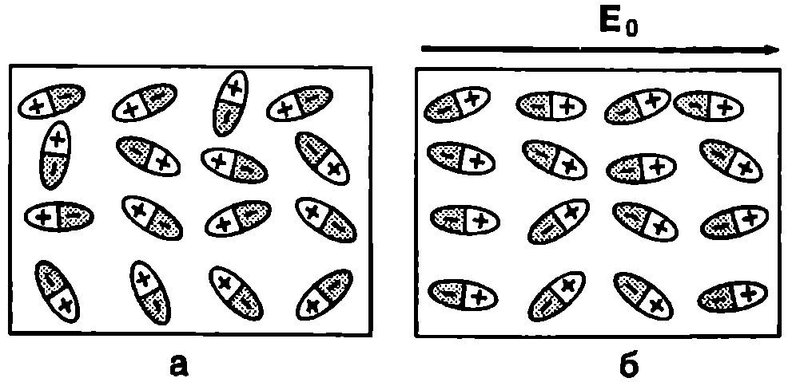
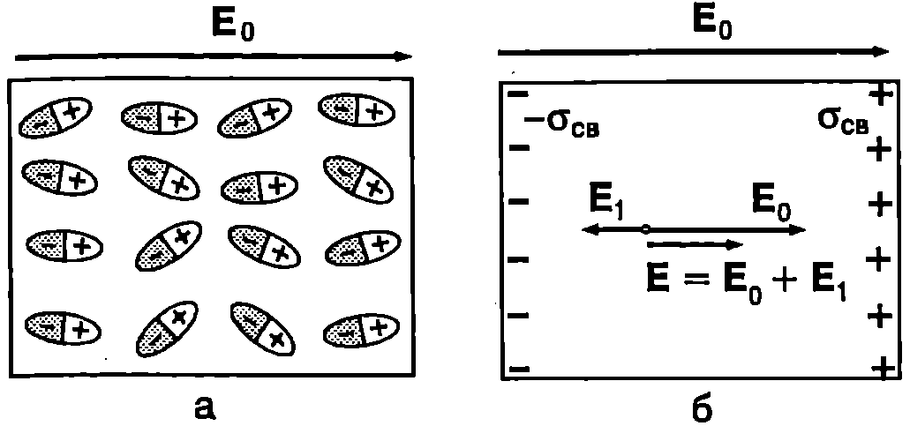
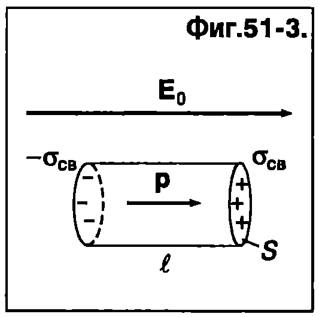

Проводници и диелектрици
В зависимост от това, дали елекростатичните полета проникват или не проникват в обема на веществото, Фарадей разделя веществата на две групи: проводници и диелектрици. Проводниците напълно екранират електростатичните полета, което се дължи на големия брой свободни електрични заряди. Свободните заряди се разпределят така, че вътре в проводника тяхното електрично поле изцяло компенсира външното поле. Средите, в които проникват електростатичните полета, Фарадей нарича диелектрици (от лат. dia — през и англ. electric — електричен). За разлика от проводниците, в диелектриците практически няма свободни електрични заряди, тъй като всички електрони са свързани в атомите и молекулите. Затова външните електрични полета предизвикват само поляризация на атомите (молекули те) на диелектрика и ориентират атомните диполни моменти по посока на полето.
Диелектрична проницаемост
Фарадей установява експериментално, че когато пространството между електродите на кондензатор с капацитет $C_0$ се запълни с еднороден диелектрик, капацитетът на кондензатора нараства $\varepsilon$ пъти: $$C = \varepsilon C_0. $$ Безразмерната константата $\varepsilon$ характеризира даденото вещество и се нарича диелектрична проницаемост (или относителна диелектрична проницаемост). Стойностите на диелектричната проницаемост е за някои диелектрици са дадени в табл. 51.1.
\begin{table}[t] \centering \begin{tabular}{| l|l |l|l|} \hline Вещество& $\varepsilon$&Вещество &$\varepsilon$\ Въздух & 1,00057 & NaCl &5,26 \ CO2 & 1,00099 & Бензол &2,322\ Слюда & 6 & SI &12,0\ Етилов спирт & 26,8 & Полиетилен &2,3\ Вода& 81& Сегнетова сол&6000\\end{tabular} \captionof{table}[51.1]{ \label{table:51.1} Диелектрична проницаемост в на някои вещества при температура 20°C.} \end{table}
Да разгледаме зареден плосък кондензатор. Зарядът $q$, напрежението $U$ и капацитетът $C_0$ на кондензатора са свързани със съотношението \eqref{eq:48.3}: $$q = C_0 U.$$
Ако цялото пространство между електродите се запълни с диелектрик, съгласно уравнение \eqref{eq:51.1}, капацитетът на кондензатора нараства $\varepsilon$ пъти. Тъй като при това зарядът $q$ не се променя, от равенството $q = C_0U_0$ следва, че напрежението на кондензатора намалява $\varepsilon$ пъти: $U = {U_0}/{\varepsilon}.$ Електричното поле в плосък кондензатор е еднородно. Интензитетът му преди внасянето на диелектрика е $E_0 = {U_0}/{d},$ където $d$ е разстоянието между електродите. След внасяне на диелектрика интензитетът на полето става $$E = \frac{U}{d} = \frac{U_0}{\varepsilon d} = \frac{E_0}{\varepsilon},$$ т.е. намалява $\varepsilon$ пъти. Следователно, при внасяне на диелектрик във външно електростатично поле с интензитет $E_0$ (в разглеждания случай това е полето на заредения кондензатор), полето вътре в диелектрика е по-слабо от външното. Отношението на интензитета $E_0$ на външното поле към интензитета $E$ на полето в диелектрика е равно на диелектричната проницаемост е на веществото: $$\varepsilon = \frac{E_0}{E}. $$
Поляризация на диелектриците

`Фиг. 51.1`
Да разгледаме диелектрик с полярни молекули. Поради топлинното движение диполните моменти на отделните молекули са насочени напълно хаотично (Фиг. \ref{fig:51.1}а). Затова, ако мислено отделим малък макроскопичен обем от диелектрика, неговият диполен момент (векторната сума от диполните моменти на молекулите, съдържащи се в този обем) е нула. Във външно електрично поле с интензитет $\vec E_0$ на всеки дипол е приложен въртящ момент, който се стреми да го ориентира по посока на полето. На ориентиращото действие на електричното поле се противопоставя хаотичното топлинно движение, водещо до “разбъркване” на диполите. В резултат на едновременното действие на двата конкуриращи се фактора молекулните диполи се ориентират само частично (преимуществено) по посока на полето (Фиг. \ref{fig:51.1}б). Явлението се нарича ориентационна поляризация на диелектрика и се характеризира с вектора на поляризация $\vec P$. По определение векторът на поляризация $\vec P$ е равен на векторната сума от диполните моменти на всички молекули, съдържащи се в единица обем от диелектрика.
Разглеждаме малък обем $\Delta V$ от диелектрика, в който се съдържат $N$ молекули. Диполните моменти $\vec p_i$ на отделните молекули имат еднаква големина, но посоките им са различни (Фиг. \ref{fig:51.1}б). Векторът на поляризация е $$\vec P = \frac{1}{\Delta V} \sum_{i=1}^N \vec p_i = n\vec p_\text{ср} $$ където $n = N/\Delta V$ е концентрацията на молекулите, а $\displaystyle \vec p_\text{ср} = \frac{1}{N} \sum_{i=1}^N \vec p_i$ е средната стойност на диполния момент на молекулите от обема $\Delta V$. Доказва се (теоретично и експериментално), че в слаби електрични полета, когато големината на интензитета $E$ на макроскопичното поле в диелектрика удовлетворява условието $E \ll kT/p$ ($T$-абсолютна температура, $k$ — константа на Болцман, $p$ — диполен момент на полярните молекули), векторът $\vec p_\text{ср}$ се изразява с формулата $$\vec p_\text{ср} = \frac{p^2}{3kT} \vec E. $$ След заместване на $\vec p_\text{ср}$ в уравнение \eqref{eq:51.3} за вектора на поляризация се получава $$\vec P = \frac{np^2}{3kT} \vec E. $$ От уравнение \eqref{eq:51.5} следва, че векторът на поляризация $\vec P$ е насочен по посока на интензитета $\vec E$ на макроскопичното поле в диелектрика, а големината му е правопропорционална на големината на $\vec E$. Хаотичното топлинно движение на молекулите препятства ориентирането на диполните им моменти по посока на полето. Затова $P$ намалява при повишаване на температурата $T$.
Диелектриците с неполярни молекули също се поляризират. Под действие на електичното поле всяка молекула получава индуциран диполен момент $\vec p = \alpha \vec E$ (а е поляризуемостта на молекулата), който е насочен по посока на полето. Векторът на поляризация на диелектрик с неполярни молекули е $$\vec P = n \vec p = n\alpha \vec E, $$ където $n$ е концентрацията на молекулите Такава поляризация се нарича електронна поляризация, защото е свързана с деформирането на електронните обвивки на атомите под действие на електричното поле.
Свързани заряди
Когато диелектрик се постави в електрично поле той се поляризира и върху срещуположните му повърхности възникват некомпенсирани електрични заряди. За разлика от явлението електростатична индукция при проводниците, индуцираните заряди върху повърхността на диелектриците не са свободни. Те са част от заряда на поляризирани молекули, поради което се наричат свързани заряди. Възникването на свързани заряди се илюстрира от Фиг. \ref{fig:51.2}а. Пластинка от диелектрик е поставена в еднородно електрично поле с интензитет $\vec E_0$. Молекулните диполи са ориентирани в направление на външното електрично поле. Електричният заряд във всяка макроскопична област от обема на диелектрика е нула. Некомпенсиран електричен заряд има единствено на повърхността на диелектрика: лявата повърхност на пластинката се зарежда с отрицателен заряд с повърхнинна плътност $-\sigma_\text{св}$ а дясната — с положителен заряд с повърхнинна плътност $\sigma_\text{св}$. Свързаните заряди са разпределени равномерно по двете повърхности на пластинката и създават електрично поле, което с приближение може да се разглежда като поле на две равномерно заредени успоредни безкрайни равнини (вж. пример 48.2 на стр. 28). Извън пластинката полето на свързаните заряди е нула, а вътре в нея има интензитет ${E}1 = \sigma\text{св}/\varepsilon_0$. Векторите $\vec E_1$ и $\vec E_0$ са с противоположни посоки (Фиг. \ref{fig:52.2}б): полето на свързаните заряди частично компенсира външното поле. Затова интензитетът на макроскопичното поле в диелектрика е по-малък от интензитета на външното поле. Съгласно с принципа на суперпозицията

`Фиг. 51.2`
$$\vec E = \vec E_0 + \vec E_1 \quad \text{ или } \quad E = E_0 - E_1 = E_0 - \sigma_\text{св}/\varepsilon_0.$$ Заместваме в горното равенство $E_0 = \frac{E}{\varepsilon}$ (вж. уравнение \eqref{eq:51.2}) и получаваме връзката между интензитета $E$ на макроскопичното поле в диелектрика и повърхнинната плътност на свързаните заряди $\sigma_{\text{св}}$: $$\sigma_\text{св} = \varepsilon_0 (\varepsilon-1) E. $$ Връзка между диелектричната проницаемост и атомната поляризуемост

`Фиг. 51.3`
Ще разгледаме най-простия за анализ случай: разреден инертен газ е поставен в електрично поле. Отделяме мислено от газа малък цилиндричен обем $\Delta V$ с основа $S$ и височина $l$ (Фиг. \ref{fig:51.3}). Всеки атом се намира в електрично поле с интензитет $\vec E$ и има индуциран диполен момент ${p} = \alpha {E}$, насочен по посока на полето. Общият диполен момент на газа от обема $\Delta V$ е $N {p} = N\alpha E$, където $N$ е броят на атомите. От друга страна, диполният момент на цилиндъра може да се изрази чрез повърхнинната плътност $\sigma_{\text{св}}$ на индуцираните върху двете му основи свързани заряди. Те са равни по големина и противоположни по знак, поради което могат да се разглеждат като електричен дипол с диполен момент $(\sigma_{\text{св}} S) l$. Следователно, $$N \alpha E = (\sigma_{\text{св}} S) l,$$ откъдето изразяваме повърхнинната плътност на свързаните заряди $$\sigma_\text{св} = \frac{N}{Sl} \alpha E = n\alpha E, $$ където $n = \frac{N}{S l} = \frac{N}{\Delta V}$ е концентрацията на атомите. Приравняваме десните страни на уравнения \eqref{eq:51.7} и \eqref{eq:51.8} и изразяваме атомната поляризуемост $\alpha$ чрез диелектричната проницаемост $\varepsilon$: $$\alpha = \frac{\varepsilon_0 (\varepsilon-1)}{n}. $$ Диелектричната проницаемост $\varepsilon$ е макроскопична величина, която се определя експериментално. От получените стойности на $\varepsilon$ (при известна концентрация $n$ на газа) може да се пресметне поляризуемостта $\alpha$ на атомите.
Когато концентрацията на газа е голяма, трябва да се отчита дипол-диполното взаимодействие между атомите. Тогава за атомната поляризуемост се получава следното съотношение: $$\alpha = \frac{\varepsilon_0 (\varepsilon-1)}{n}\frac{3}{\varepsilon+2}. $$ известно като формула на Клаузиус-Мосоти.
Задачи
- Плосък кондензатор без диелектрик има капацитет $C_0$ Между електродите на кондензатора се вкарват две диелектрични пластинки с диелектрични проницаемости $\varepsilon_1$ и $\varepsilon_2$ (Фиг. \ref{fig:51.4}). Определете капацитета на кондензатора с диелектрик.

`Фиг. 51.4`
Указание. Системата е еквивалентна на два последователно свързани кондензатора.